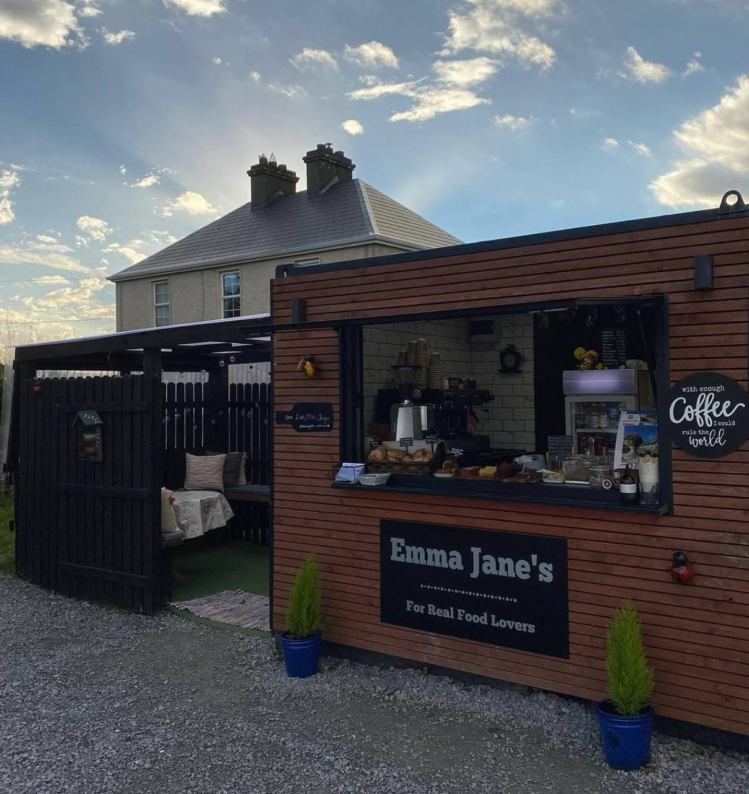

Emma Jane's Archive
Our Story
Before Emma Jane’s became the cosy coffee hut it is today, Emma had her own food truck where she served burgers and simple homemade food. It was a small beginning, but it gave her the idea of creating a place where people could enjoy good food, fresh air and a friendly atmosphere.
After thinking about it for a long time, Emma finally opened the café in 2021. Since then, it has changed many times: the menu grew, the space became more comfortable, the garden seating improved, and every little detail was made better step by step.
Today, Emma Jane’s is the result of all those changes and ideas. It is now the place you see today — a warm countryside café with coffee, toasties, pancakes, homemade treats and colourful outdoor tables.
